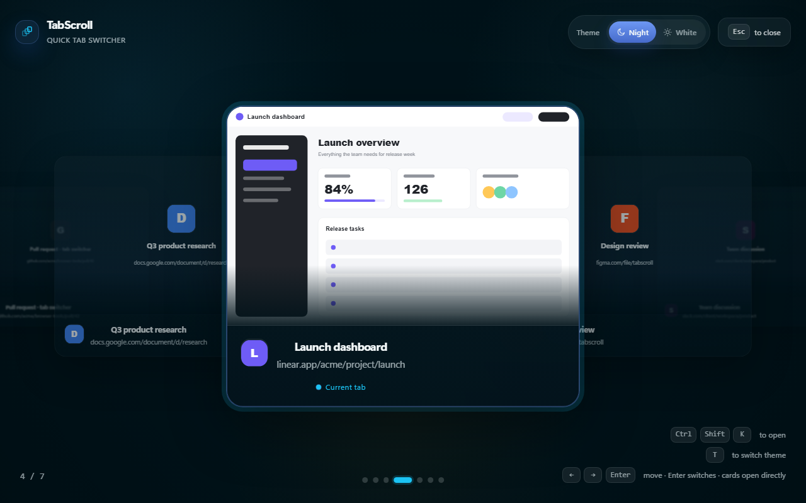

CtrlShiftK
Open instantly
Use one shortcut or click the toolbar button from any regular web page.
Built for crowded Chrome windows
Know where you're going before you switch. TabScroll turns a crowded browser window into a focused, full-screen visual switcher.

Thirty tabs open.
No more guessing which favicon is which.
Three movements
TabScroll stays out of the way until you need it, then gives every open tab room to be recognized.
Use one shortcut or click the toolbar button from any regular web page.
Scroll or use the arrow keys to move through recognizable tab cards. Navigation wraps at either end.
Press Enter for the centered card, or click any visible card to switch there immediately.
Made to be recognizable
TabScroll makes the selected page unmistakable while keeping nearby tabs visible for context.
Local by design
TabScroll has no backend, login, ads, analytics, tracking pixels, or third-party telemetry. Open-tab details and the current-page preview stay in your browser.
Read the privacy policyIt lets TabScroll read the titles, addresses, and favicons of tabs that are currently open so each card is recognizable. Chrome may call this browsing-history access because open-tab addresses are visible. TabScroll does not read stored history, and you can decline and use the limited view.
Give every tab room to be seen
Install TabScroll and turn your next crowded window into a visual switcher.
Add TabScroll to Chrome